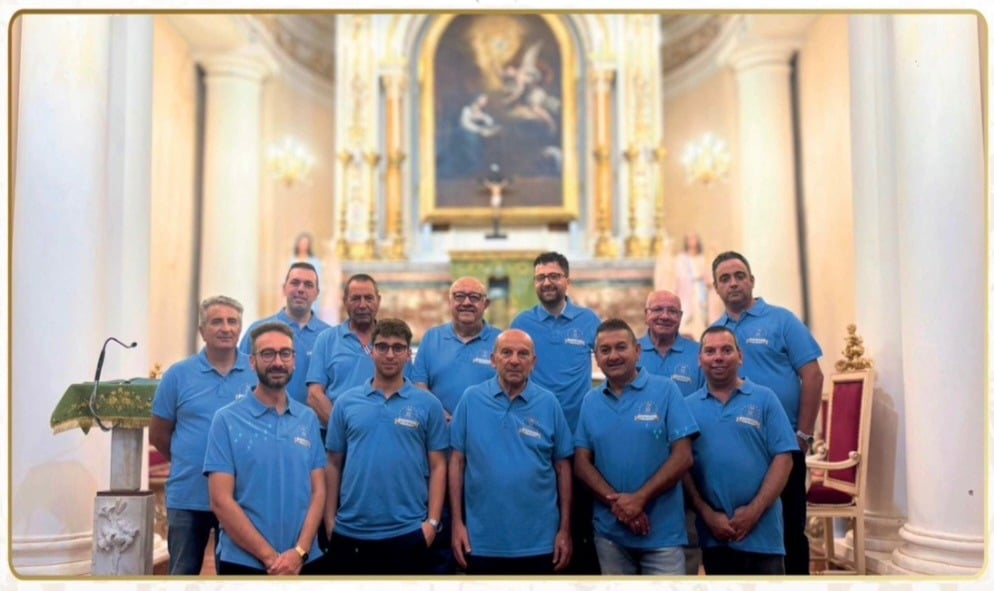

Il Comitato Festeggiamenti
Il Comitato Festeggiamenti Maria Santissima Annunziata nasce e opera con profonda dedizione per dare vita, ogni anno, alla Festa Patronale, in stretta collaborazione con la Parrocchia, le istituzioni, le associazioni e i numerosi volontari. Il suo impegno affonda le radici nel desiderio sincero di custodire una tradizione secolare e di trasmetterla viva e autentica alle nuove generazioni, intrecciando fede, cultura e partecipazione in un unico grande abbraccio comunitario. Dietro ogni edizione della festa si cela il lavoro instancabile di decine di persone che, animate da spirito di servizio e da un profondo amore verso la Patrona, donano tempo, energie e cuore alla preparazione del programma religioso e civile.
